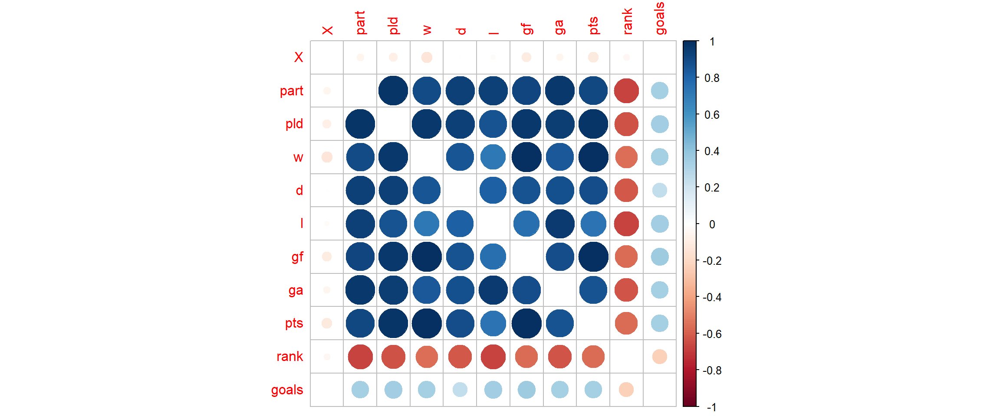
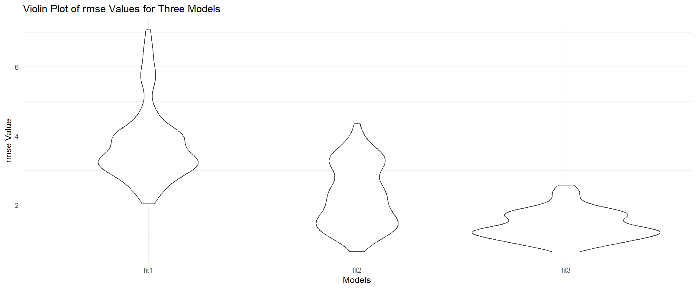

country: Individual country (represents national soccer team)part: Number of times each country has participated in the World Cup (all time)pld: Number of games played in the World Cup (since 1990)w: Number of soccer games a country has won in the World Cup (since 1990)d: Number of soccer games a country has drawn in the World Cup (since 1990)l: Number of soccer games a country has lost in the World Cup (since 1990)gf: Number of goals a country has scored against opponents in the World Cup (since 1990)ga: Number of goals scored against a country in the World Cup (since 1990)gd: Goal difference of country (goals scored by country minus goals scored against country)pts: Number of points accumulated by country in the World Cup (since 1990)rank: Country Official FIFA ranking (2022 Rankings)player: Name of top record goal scorergoals: Number of goals scored by top record goal scorerland_area_km: Total area of the land-based portions of a country’s geography (measured in square kilometers, km²)confederation: Country FIFA confederationdata <- read.csv("./data/12_4_dataset.csv") %>%
na.omit() %>%
select(-country)
num = data[2:14] %>%
select(-gd, -player)
corrplot(cor(num), diag = FALSE)
By using different selection method, we got three different models, and we want to use cross validation to check which model has the best performance.
cv_df =
crossv_mc(data, 100) %>%
mutate(
train = map(train, as_tibble),
test = map(test, as_tibble))
cv_df =
cv_df %>%
mutate(
train = map(train, as_tibble),
test = map(test, as_tibble))
cv_df =
cv_df %>%
mutate(
fit1 = map(train, ~lm(w ~ pld + d + rank, data = .x)),
fit2 = map(train, ~lm(w ~ pld + d + rank + gf, data = .x)),
fit3 = map(train, ~lm(w ~ pld + d + rank + gf + ga, data = .x))) %>%
mutate(
rmse_fit1 = map2_dbl(fit1, test, ~rmse(model = .x, data = .y)),
rmse_fit2 = map2_dbl(fit2, test, ~rmse(model = .x, data = .y)),
rmse_fit3 = map2_dbl(fit3, test, ~rmse(model = .x, data = .y)))
cv_df %>%
select(starts_with("rmse")) %>%
pivot_longer(
everything(),
names_to = "model",
values_to = "rmse",
names_prefix = "rmse_") %>%
mutate(model = fct_inorder(model)) %>%
ggplot(aes(x = model, y = rmse)) + geom_violin()+
ylab("rmse Value") +
xlab("Models") +
labs(title = "Violin Plot of rmse Values for Three Models")
These three models are the results from forward selection, but gf and ga are two variables on the border line. Therefore, we use cross validation to check is these two variables need to be included in the model and which model is the best. From the violin plot, we can see that model 3 has the lowest rmse, which is the model chosen by forward selection. The first model has only three variables, pld, d, and rank. The second model has four variables, pld, d, rank, and gf. The third model has five variables, pld, d, rank, gf, and ga.
Our final model was chosen by forward selection, where we start with only the intercept and add one predictor as a time. The criteria we chose is p-value, which means we will select predictors to include based on p-values, until no more predictors having p-value less than 0.05 can be added to the model.
model1=lm(w~pld + d + rank , data = num)
model2=lm(w~pld + d + rank + gf, data = num)
model3=lm(w~pld + d + rank + gf + ga, data = num)
summary(model1)##
## Call:
## lm(formula = w ~ pld + d + rank, data = num)
##
## Residuals:
## Min 1Q Median 3Q Max
## -9.9168 -1.8090 0.3404 1.8513 10.1195
##
## Coefficients:
## Estimate Std. Error t value Pr(>|t|)
## (Intercept) -6.23478 1.09234 -5.708 0.000000216 ***
## pld 0.80197 0.04533 17.692 < 0.0000000000000002 ***
## d -1.03027 0.20393 -5.052 0.000002986 ***
## rank 0.03749 0.01368 2.740 0.00768 **
## ---
## Signif. codes: 0 '***' 0.001 '**' 0.01 '*' 0.05 '.' 0.1 ' ' 1
##
## Residual standard error: 3.362 on 75 degrees of freedom
## Multiple R-squared: 0.9488, Adjusted R-squared: 0.9468
## F-statistic: 463.6 on 3 and 75 DF, p-value: < 0.00000000000000022summary(model2)##
## Call:
## lm(formula = w ~ pld + d + rank + gf, data = num)
##
## Residuals:
## Min 1Q Median 3Q Max
## -10.0701 -0.3172 0.2980 0.8036 6.7306
##
## Coefficients:
## Estimate Std. Error t value Pr(>|t|)
## (Intercept) -1.687024 0.788267 -2.140 0.0356 *
## pld 0.056613 0.072714 0.779 0.4387
## d -0.065986 0.152813 -0.432 0.6671
## rank 0.007440 0.008861 0.840 0.4038
## gf 0.285927 0.025751 11.103 <0.0000000000000002 ***
## ---
## Signif. codes: 0 '***' 0.001 '**' 0.01 '*' 0.05 '.' 0.1 ' ' 1
##
## Residual standard error: 2.073 on 74 degrees of freedom
## Multiple R-squared: 0.9808, Adjusted R-squared: 0.9798
## F-statistic: 945.5 on 4 and 74 DF, p-value: < 0.00000000000000022summary(model3)##
## Call:
## lm(formula = w ~ pld + d + rank + gf + ga, data = num)
##
## Residuals:
## Min 1Q Median 3Q Max
## -3.8861 -0.5576 0.1279 0.7624 2.3776
##
## Coefficients:
## Estimate Std. Error t value Pr(>|t|)
## (Intercept) -1.560889 0.449031 -3.476 0.00086 ***
## pld 0.660468 0.063756 10.359 0.000000000000000554 ***
## d -0.627753 0.098018 -6.404 0.000000012967977027 ***
## rank 0.015883 0.005092 3.119 0.00259 **
## gf 0.153686 0.018105 8.489 0.000000000001697567 ***
## ga -0.223635 0.017953 -12.456 < 0.0000000000000002 ***
## ---
## Signif. codes: 0 '***' 0.001 '**' 0.01 '*' 0.05 '.' 0.1 ' ' 1
##
## Residual standard error: 1.18 on 73 degrees of freedom
## Multiple R-squared: 0.9939, Adjusted R-squared: 0.9934
## F-statistic: 2363 on 5 and 73 DF, p-value: < 0.00000000000000022By looking at the summary, we can see that model 3 has the highest adj. R^2 of 99.3%, which means our model explain over 99% of the variance in the outcome (wins)
Our final model is w = -1.554369 + 0.661219pld - 0.622216d + 0.015920rank + 0.153794gf -0.225378ga.
The most significant variable in the model is ga with coefficient of -0.225378. That means if the number of number of goals scored against a country in the World Cup (since 1990) increases by 1 goal, the would decrease the number of winning by 0.225378, while holding other variables constant.
With R^2 of 99.3%, which means our model explain over 99% of the variance in the outcome (wins).